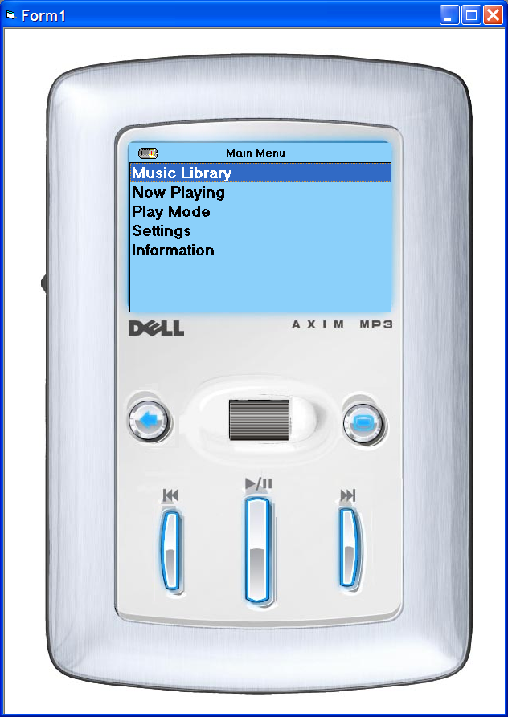
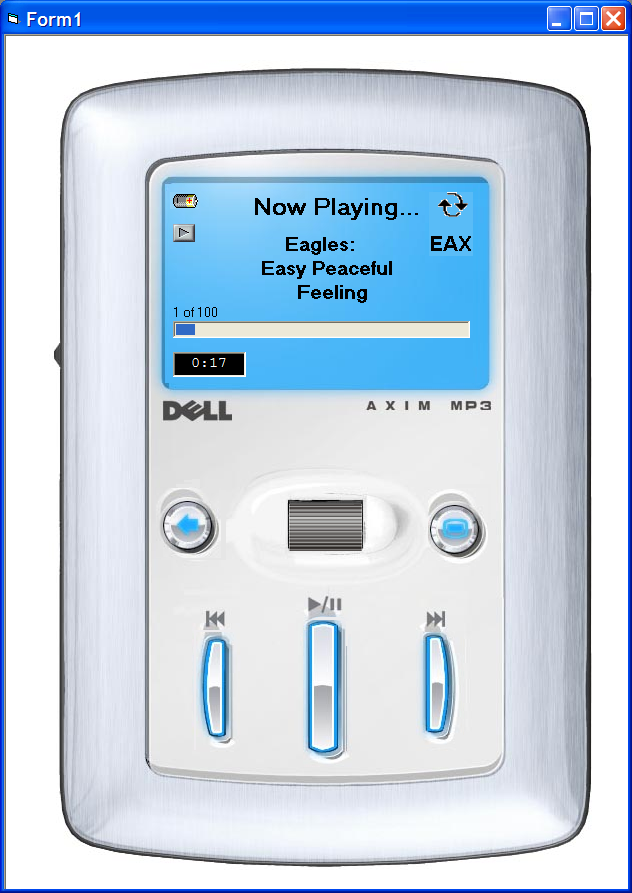
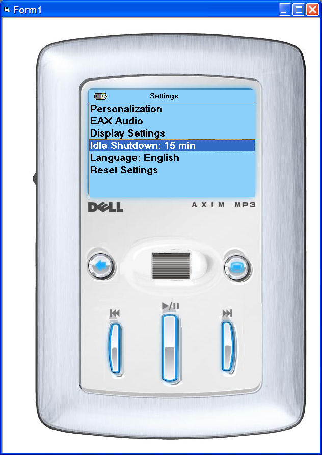
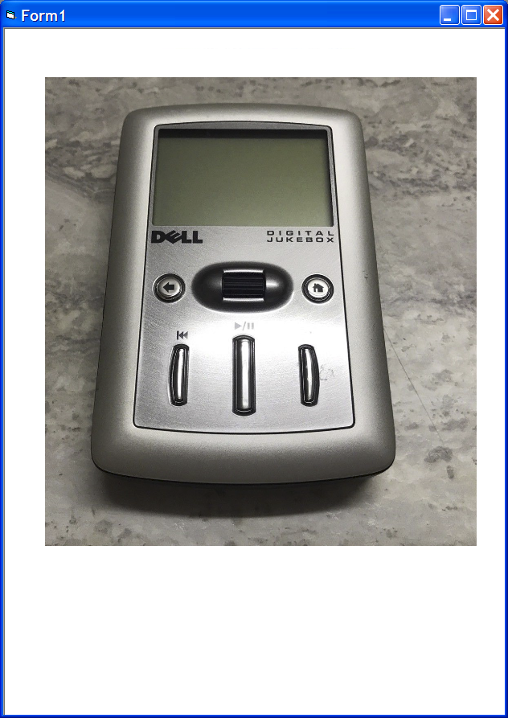
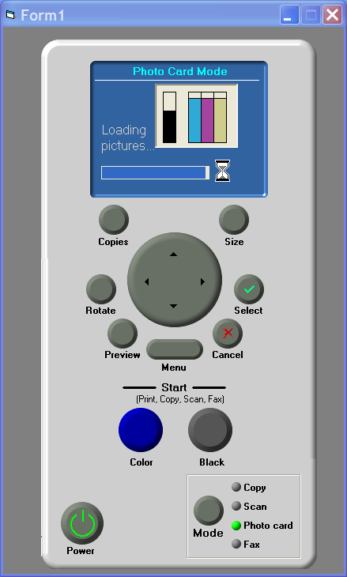
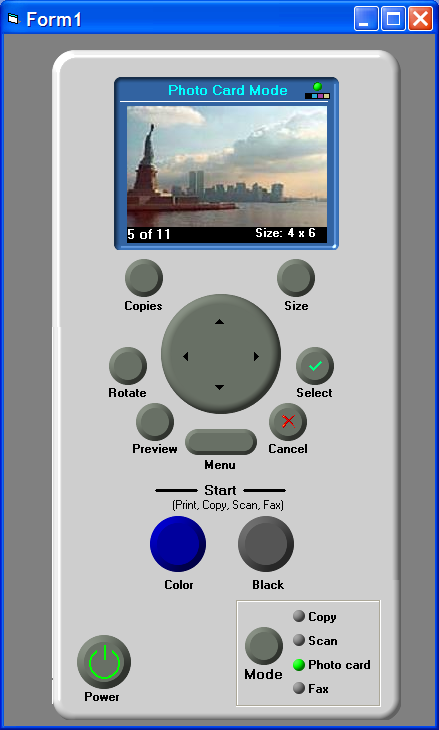
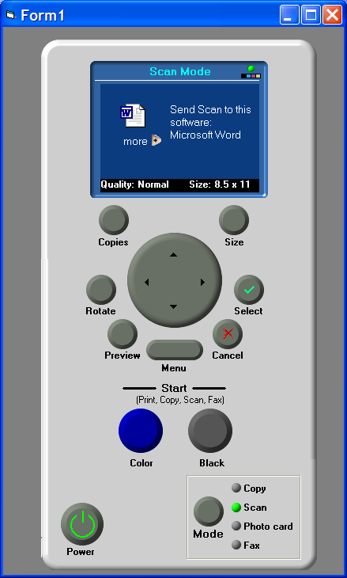
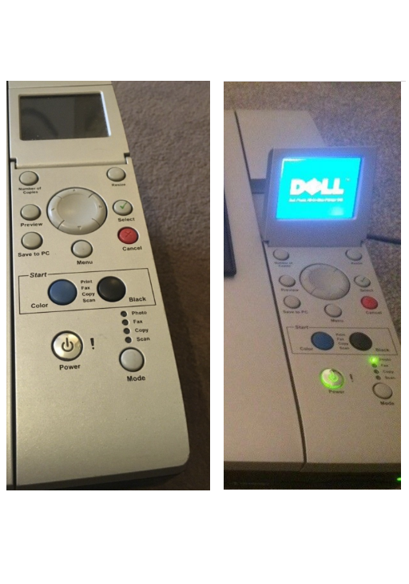

Hardware Design
Having worked for several major companies that are well-known for selling hardware products to the mass consumer market, I had to learn to design for hardware products early in my career (e.g., printers, fax machines, MP3 players, CD/DVD writers). While hardware products may look different than software or web applications, the principles of UX design very much apply to both circumstances. As a UX Designer I still had to conduct user research and document user goals; define the personas, and define the use cases accordingly. Further, designing for hardware products is actually more challenging since the user interaction is not as conventional and as predictable as designing for desktop applications. I had to face the additional challenge of ensuring user success while interacting with a small screen and just a few buttons to control a device. Incorporating tactile feedback into the interaction design also became a very important design element to consider.
I managed to achieve success in hardware UX design with my graphics skills in order to design the layout of the control panels, and by writing code to simulate user interactions for pressing buttons, and displaying the results on LCDs, and getting the desired output from the device. This resulted in rapid prototyping and early user testing on hardware products with huge impact on design decisions by discovering usability issues and customer preferences early in the design phase.
Dell Jukebox MP3 Player
Dell Jukebox was another major attempt by Dell to enter the consumer market and gain recognition as being more than just a PC manufacturer. Apple's iPod was at the time the undisputed king of the MP3 players. Any competition had to come up with worthy user-friendly features to attract consumers in a saturated market segment. Dell Jukebox also made the company aware that low-cost solutions and price alone could not be the only drivers to gain market share, and that ease of use and design aesthetics were the key differentiations of Apple products that consumers were willing to pay for.
Through user research, we actually learned that one of the most important features of iPod was the signature Click Wheel. It was not just the fact that the iPod wheel simplified user interaction and the user navigation with the iPod, but the enormous ergonomic value to the users by being able to hold the device with one hand and use the thumb to navigate the menus and select songs at the same time (and pause/play or skip). So while we could design the menus similar to iPod, we had to create something similar (ergonomically speaking) to iPod functionality.
As such we came up with the concept of the Thumb Wheel at the center of the device, which would enable the users to navigate the menus vertically and then press it to select items like songs. The rest of the buttons for pause/play, rewind/forward, and skip were also placed ergonomically to be within the reach of the user's thumb and be comfortable to press with tactile feedback. I also had to work on the software for the Jukebox with our supplier in order to make sure that the user could transfer songs easily from the PC to the albums on the device. The player received warm reception in the market for its innovative features and ergonomics.




Dell Photo Printers
When I started working for Dell, the User Experience Group conducted user testing on third-party products with virtually no UX Design involvement in the design of the products. I was hired to help establish UX Design within usability and help bring more influence and recognition to our group through design involvement. Dell was essentially a hardware company, and the suppliers modified Dell products based on slight cosmetic modifications in order to differentiate the Dell brand of products. The company was realizing that the success of Apple was largely due to the fact that the Apple User Experience was directly involved in product design, and our group had to respond somehow.
My first major assignment with the printer product line was to directly work with Lexmark as our supplier, and modify their printer control panels and firmware to make the Dell brand easier to use and give our printers their own personality. One such product was the Dell 942 printer, the first major attempt to redesign and modify a supplier multifunction printer. The device had to Print, Scan, Copy, and Fax. Through user research we learned which direct shortcuts the customers preferred for routine tasks via the buttons on the control panel, rather than having to navigate through the tedious and complicated menus on the LCD screen that had been originally designed by Lexmark.
For example, users wanted separate buttons for printing in color or in black to save money on ink without selecting the option through a menu; they wanted to be able to scan to an application directly (e.g., Microsoft Word or PDF), and select each device mode directly on the control panel (for print, copy, fax, and scan). We realized that a low-cost solution to install fewer buttons and force the users to cycle through menus could actually backfire in the market, and as such made better informed design decisions through interviews and focus groups. The user research, the design effort, and the A/B usability tests helped the company design an effective control panel through interactive mockups before the printer hardware was built, which also provided the firmware and software engineers with a vision to understand the intent of the UX design and build it more quickly. It further helped differentiate the Dell brand because of its user-friendly features, and created a design paradigm for millions of Dell printers sold around the world.



